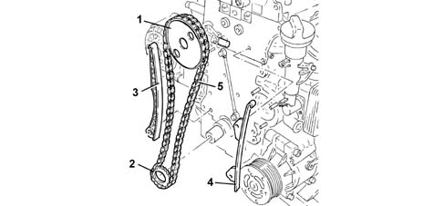

1032B belt timing system
- Path
- Descriptions > 10 ENGINE > 1032 TIMING SYSTEM > 1032B belt timing system
- Kind
- system description
- Applies to
- engines: 1.3 JTD; all production periods
- Interactive page
- https://sloeber94.github.io/elrnDB-lYpsln/en/#/2427392
Applies to: engines: 1.3 JTD; all production periods
The timing gear is driven directly by chain.

1 - Driven sprocket 2 - Drive sprocket 3 - Moving block 4 - Fixed block 5 - Timing chain